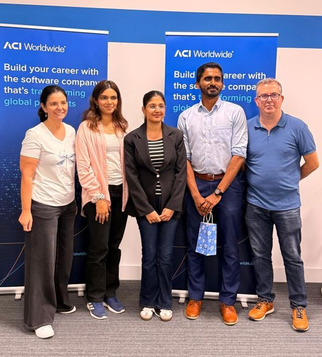
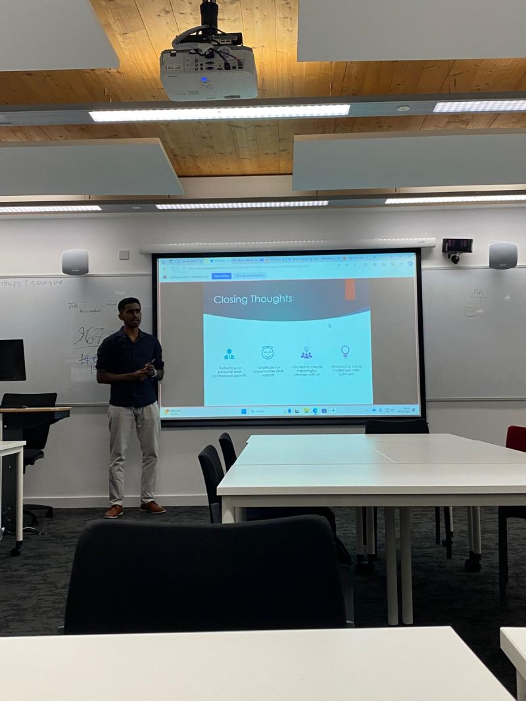
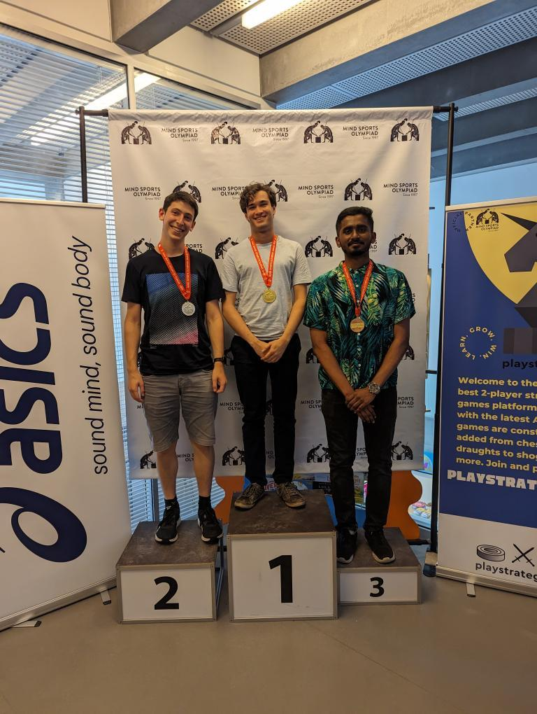

🏆 ACI Worldwide Hackathon 2025
Limerick, IrelandCompeted in an industry-led hackathon organised by ACI Worldwide, focused on solving real-world challenges related to fraud detection and code security within financial systems. Secured a 2nd place finish among multiple teams.
- Designed Python-based data analysis workflows to identify suspicious sender IDs and anomalous transaction patterns.
- Analysed fraud scenarios and potential system vulnerabilities under realistic operational constraints.
- Collaborated under time pressure to develop and present a working technical solution.
- Gained exposure to security, reliability, and risk considerations in large-scale financial systems.
Skills demonstrated: Python · Data Analysis · Cybersecurity · Problem Solving · Industry Collaboration

🏅 University of Kent Employability Points Award
University of Kent | 2023 – 2024Awarded through the University of Kent Employability Points Scheme, receiving 875 employability points for consistent engagement in career development activities alongside academic study.
- Participated in professional development workshops, industry events, and employability-focused programmes.
- Demonstrated initiative through networking, skills development, and extracurricular learning.
- Strengthened professional readiness through continuous learning and career planning.
Skills demonstrated: Professional Development · Initiative · Career Planning · Continuous Learning
🤝 EIRA i-Teams Kent — Industry Consultancy Programme
University of Kent | 2021Selected participant in an 8-week multidisciplinary consultancy programme, collaborating with industry partners to address real-world business challenges.
- Worked in a cross-disciplinary team analysing industry problems and proposing solutions.
- Delivered final presentation to industry sponsors including TRN Ltd.
- Mentored by Tudor Price, Deputy CEO of Kent Invicta Chamber of Commerce.
- Developed stakeholder communication and professional presentation skills.
Skills demonstrated: Problem Solving · Communication · Teamwork · Industry Research · Presentation Skills
🌍 Indo–German Student Exchange Programme
Germany & Kerala, India | 2017Selected participant in a bilateral student exchange programme between India and Germany, promoting cross-cultural understanding and global engagement.
- Spent two weeks in Germany (July 2017) living with a host family and engaging in cultural, educational, and community activities.
- Hosted German exchange students in Kerala, India (October 2017), providing cultural immersion and local experiences.
- Developed strong intercultural communication skills and adaptability through collaborative international engagement.
Skills demonstrated: Cross-Cultural Communication · Adaptability · Global Awareness · Responsibility

🎤 Guest Speaker — University of Kent
University of Kent, Canterbury, United KingdomInvited as a guest speaker to share my academic and professional journey, including industrial placement experience and postgraduate AI research.
- Discussed industry learning from my industrial placement year.
- Presented progression from academic study to applied AI development.
- Shared insights into career development and continuous learning.
- Engaged with students through Q&A and mentorship discussion.
Skills demonstrated: Public Speaking · Mentoring · Communication · Leadership · Industry Insight

🔷 Speedcubing
A long-standing intellectual pursuit spanning over 14 years, involving international competitions across multiple countries. My experience ranges from traditional speed events to cognitively demanding disciplines such as blindfolded solving, with a particular interest in high-complexity puzzles like the Megaminx.
In 2022, I secured a podium finish in an international mind-sport competition in London, reinforcing my passion for problem-solving under pressure and sustained mental focus.

🚗 Driving & Travelling
Driving and travelling serve as both a creative reset and a source of exploration for me. I enjoy long, spontaneous drives without a fixed destination, using the journey itself as a reflective and grounding experience.
I have travelled extensively across the United Kingdom and aim to continue exploring new countries and cultures in the coming years.
⛰ Exploration Experiences
Recently, I began exploring outdoor activities as a way to challenge myself beyond familiar environments and experience Ireland’s natural landscapes more directly. My first hike took place at the SugarLoaf mountain in County Tipperary (approximately 650–700 metres), marking a new step into outdoor exploration and personal growth.
Although new to hiking, the experience provided a refreshing shift away from structured routines — combining physical challenge, scenic exploration, and reflection. It sparked an interest in continuing to explore more hikes and outdoor activities in the future, including potential ventures into rock climbing and similar adventure-based experiences.

🎵 Music
Music became a major creative focus during the COVID lockdown period in 2020, allowing me to move beyond performance into songwriting and digital production.
Working primarily with FL Studio and a home-studio setup, I continue to refine my production skills with the goal of releasing studio-quality music.
⚽ Football
Football has been a constant part of my life since my early teenage years, shaping discipline, teamwork, and resilience through competitive play.
Competing in organised tournaments across multiple countries reinforced collaboration and adaptability — skills that strongly translate into academic and professional environments.